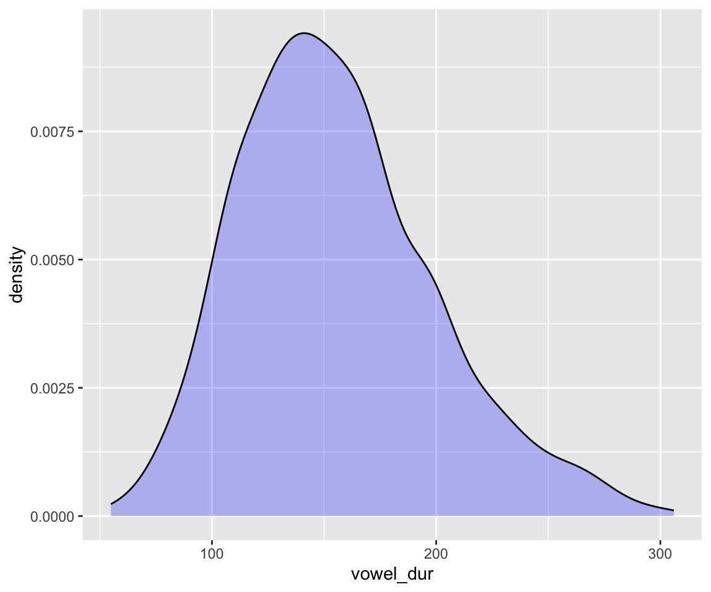
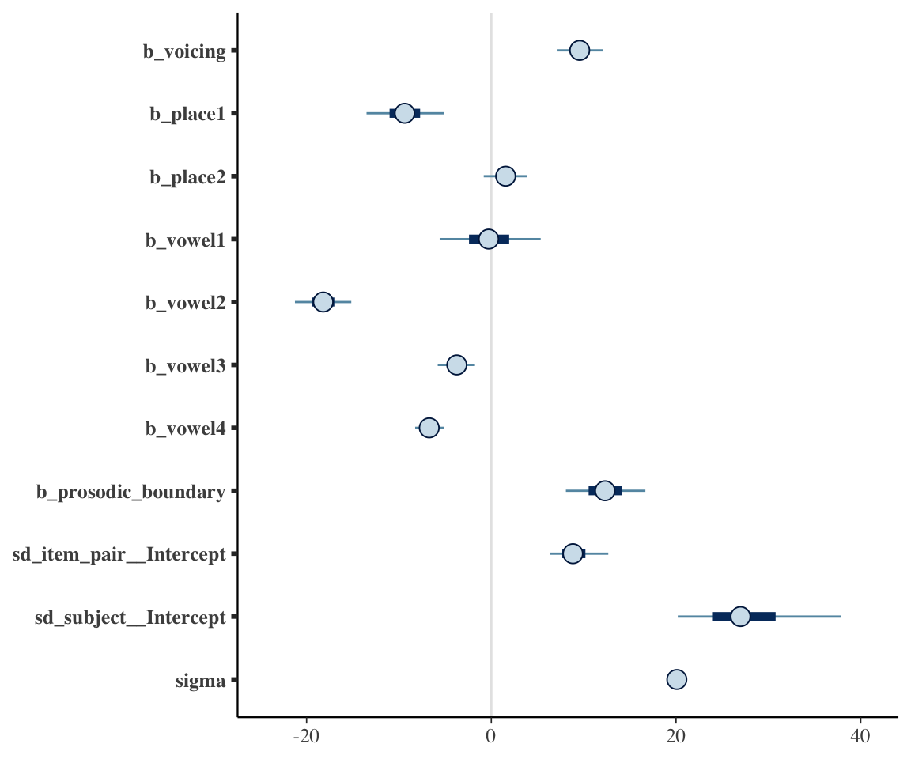
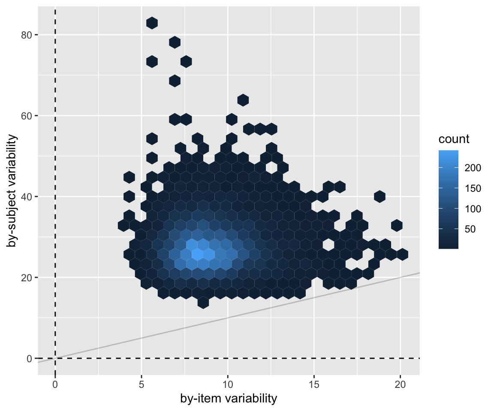
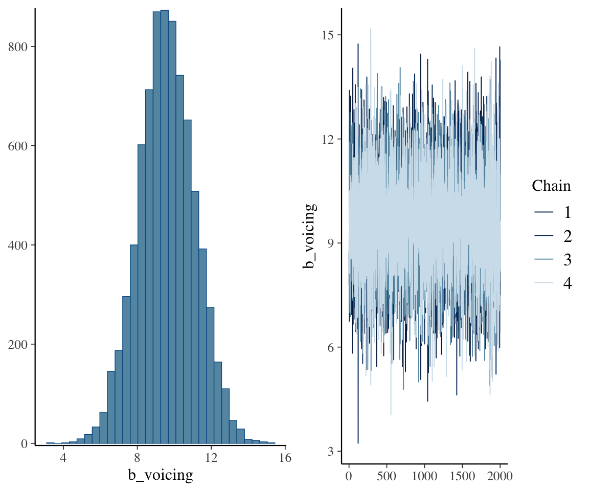
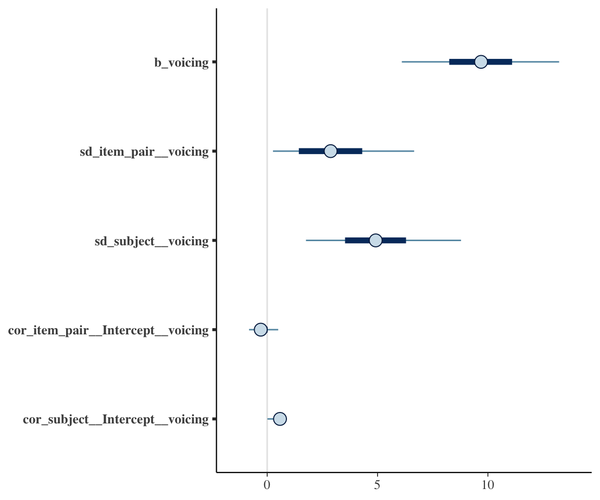
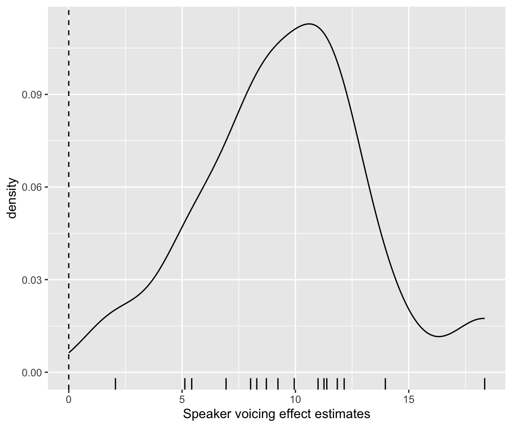
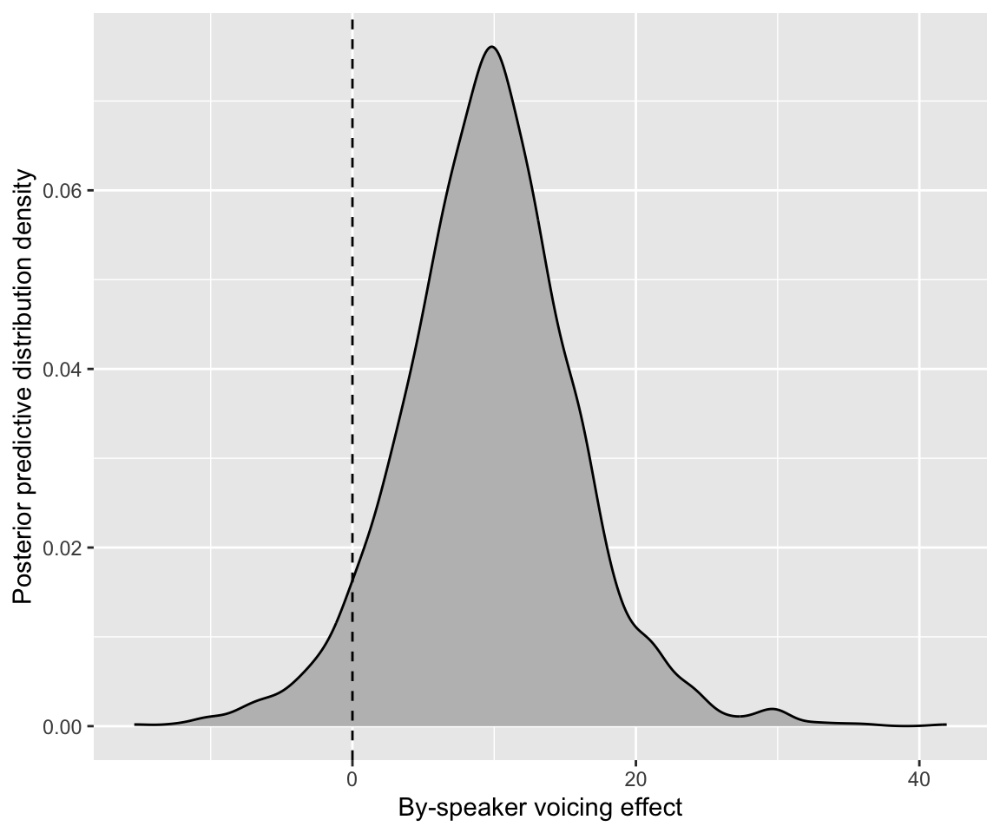

library(brms)
library(lme4)
library(arm)
library(tidyverse)
library(tidybayes)
library(bayestestR)
library(bayesplot)
library(loo)
library(broom) ## for tidy model summaries
library(broom.mixed) ## for tidy model summaries for lme4 models
library(patchwork)6 Bayesian Hierarchical Models 2
These lecture notes cover topics from:
Topics:
- BHMs with more complex random effects
- Multiple grouping factors
- Random slopes and correlations
- Model predictions: random effects
6.1 Preliminaries
Load libraries we will need:
Practical notes
If you have loaded
rethinking, you need to detach it before using brms. See Kurz (2023) Sec. 4.3.1.I use the
fileargument when fittingbrmsmodels to make compiling this document easier (so the models don’t refit every time I compile). You may or may not want to do this for your own models. Seefileandfile_refitarguments in?brm.Here I set the
file_refitoption so “brms will refit the model if model, data or algorithm as passed to Stan differ from what is stored in the file.”
options(brms.file_refit = "on_change")- I use
chains = 4, cores = 4when fittingbrmmodels below—this means 4 chains, each to be run on one core on my laptop.cores = 4may need to be adjusted for your computer. (You may have fewer or more cores; I have 8 cores, so this leaves 50% free.) You should figure out how to use multiple cores on your machine.
Make numbers be printed only to 3 digits, for neater output:
options(digits = 3)6.1.1 Data
Load the neutralization data from RMLD (Sonderegger 2023)—where this dataset is described in more detail (Sec. 3.3.1)—and perform some preprocessing (described in Sec. 10.1).
neutralization <- read.csv("https://osf.io/qg5fc/download", stringsAsFactors = TRUE) %>%
mutate(voicing_fact = fct_relevel(voicing, "voiceless")) %>%
filter(!is.na(prosodic_boundary)) %>%
mutate(
prosodic_boundary = rescale(prosodic_boundary),
voicing = rescale(voicing_fact),
item_pair = as.factor(item_pair),
subject = as.factor(subject)
)
## Code multi-level factors with Helmert contrasts
## so that all predictors are centered
contrasts(neutralization$vowel) <- contr.helmert
contrasts(neutralization$place) <- contr.helmertRecall that for this data:
voicingis of primary interest- The response is
vowel_dur - There are two grouping factors,
item_pairandsubject voicingvaries within both item and subjectprosodic_boundary,vowel,placeare controls.
6.2 Multiple grouping factors
Let’s fit a first model of the neutralization data, with:
- A realistic set of fixed effects:
voicing(of primary interest), plus all controls:vowel,place,prosodic_boundary. - Random intercepts for
item_pairandsubject
This is not a good model (we’d need random slopes for voicing), but it will do for now.
Let’s first fit a frequentist lmer() model, to compare to what we’ll get with the Bayesian model:
neut_m1 <- lmer(vowel_dur ~ voicing + vowel + place + prosodic_boundary + (1 | item_pair) + (1 | subject), data = neutralization)summary(neut_m1, correlation = FALSE)
## Linear mixed model fit by REML ['lmerMod']
## Formula: vowel_dur ~ voicing + vowel + place + prosodic_boundary + (1 |
## item_pair) + (1 | subject)
## Data: neutralization
##
## REML criterion at convergence: 6693
##
## Scaled residuals:
## Min 1Q Median 3Q Max
## -4.562 -0.604 -0.021 0.601 3.019
##
## Random effects:
## Groups Name Variance Std.Dev.
## item_pair (Intercept) 71.9 8.48
## subject (Intercept) 669.3 25.87
## Residual 402.5 20.06
## Number of obs: 749, groups: item_pair, 24; subject, 16
##
## Fixed effects:
## Estimate Std. Error t value
## (Intercept) 157.175 6.741 23.32
## voicing 9.599 1.469 6.53
## vowel1 -0.288 3.125 -0.09
## vowel2 -18.239 1.722 -10.59
## vowel3 -3.724 1.160 -3.21
## vowel4 -6.757 0.897 -7.53
## place1 -9.373 2.428 -3.86
## place2 1.604 1.321 1.21
## prosodic_boundary 12.392 2.612 4.74To fit a Bayesian model, we need to set priors. We will determine weakly informative priors, for practice.
To choose a prior for the intercept, note that the response variable vowel_dur, has range of about 50–300:
ggplot(aes(x = vowel_dur), data = neutralization) +
geom_density(fill = "blue", alpha = 0.25)
Let’s use the following priors:
- Intercept: \(N(150, 50)\)
- Whatever the intercept corresponds to in this model, reasonable values must be positive (vowel duration can only be positive).1
- \(\beta_i\): \(N(0, 50)\) — a change of 50 (msec) in
vowel_durationis huge. - Random intercept variances: \(\text{Exponential}(0.02)\)
Why is \(\lambda = 0.02\) for the exponential prior, \(\text{Exponential}(\lambda)\)? \(\lambda\) should be on the order of 1/\(SD_y\), the standard deviation of the response variable, to be “weakly informative”.2 The \(\text{Exponential(1)}\) prior we’ve seen in other models was based on the assumption that \(y\) has been standardized. In this case, it has not: sd(neutralization$vowel_dur) is 43.5, so \(\lambda\) should be around 0.02.
Practical note: Weakly-informative vs. default priors
Remember: if you are not comfortable determining weakly-informative priors, it’s always an option to just use brms’ default priors, by not specifying the prior argument of your model. brms is particularly good for weakly-informative default priors for random effects (see ?prior() Sec. 2). To use these, we’d remove the class = sd line from our prior statement when fitting the model. Using weakly-informative priors is best practice, but it is better to use default/flat priors you don’t understand than to risk fitting a model with priors that don’t make sense.
It’s also a good idea to use brms default priors whenever you just don’t understand what a model parameter is doing. (Well, the second-best idea, after actually understanding it.). This can happen even if you’re pretty comfortable with Bayesian models, when you move to a new model type. For example: if you fit a negative binomial model, everything might make sense except the shape parameter, which in fact requires substantial digging in documentation to find a good definition. It’s fine to just use brms’s default prior for it.
neutralization_m10_1 <- brm(
data = neutralization,
family = gaussian,
vowel_dur ~ voicing + place + vowel + prosodic_boundary + (1 | subject) + (1 | item_pair),
prior = c(
prior(normal(150, 50), class = Intercept), # beta_0
prior(normal(0, 50), class = b),
prior(exponential(0.02), class = sd) # sigma
),
iter = 4000, warmup = 2000, chains = 4, cores = 4,
file = "models/neutralization_m10_1.brm"
)summary(neutralization_m10_1)
## Family: gaussian
## Links: mu = identity; sigma = identity
## Formula: vowel_dur ~ voicing + place + vowel + prosodic_boundary + (1 | subject) + (1 | item_pair)
## Data: neutralization (Number of observations: 749)
## Draws: 4 chains, each with iter = 4000; warmup = 2000; thin = 1;
## total post-warmup draws = 8000
##
## Multilevel Hyperparameters:
## ~item_pair (Number of levels: 24)
## Estimate Est.Error l-95% CI u-95% CI Rhat Bulk_ESS Tail_ESS
## sd(Intercept) 9.10 1.98 5.99 13.71 1.00 3047 4798
##
## ~subject (Number of levels: 16)
## Estimate Est.Error l-95% CI u-95% CI Rhat Bulk_ESS Tail_ESS
## sd(Intercept) 27.80 5.70 19.16 41.02 1.00 2312 3711
##
## Regression Coefficients:
## Estimate Est.Error l-95% CI u-95% CI Rhat Bulk_ESS Tail_ESS
## Intercept 156.99 7.09 143.28 171.16 1.00 1834 3038
## voicing 9.60 1.51 6.61 12.57 1.00 11511 5544
## place1 -9.36 2.56 -14.42 -4.26 1.00 5323 5081
## place2 1.56 1.45 -1.29 4.51 1.00 5502 4747
## vowel1 -0.23 3.37 -6.69 6.51 1.00 5919 4941
## vowel2 -18.20 1.87 -21.95 -14.56 1.00 4969 4896
## vowel3 -3.74 1.25 -6.26 -1.27 1.00 5544 4502
## vowel4 -6.69 0.97 -8.52 -4.71 1.00 5548 5520
## prosodic_boundary 12.35 2.63 7.25 17.51 1.00 9918 6003
##
## Further Distributional Parameters:
## Estimate Est.Error l-95% CI u-95% CI Rhat Bulk_ESS Tail_ESS
## sigma 20.10 0.54 19.07 21.17 1.00 11169 4645
##
## Draws were sampled using sampling(NUTS). For each parameter, Bulk_ESS
## and Tail_ESS are effective sample size measures, and Rhat is the potential
## scale reduction factor on split chains (at convergence, Rhat = 1).Here is one possible visualization of the model’s coefficients:
# One possible posterior plot, showing all non-random effect parameters except intercept:
# regexp means "anything starting with b_X, where X doen't begin with I, and anything starting with s".
mcmc_plot(neutralization_m10_1, variable = c("^b_[^I]", "^s"), regex = TRUE)
Exercise 6.1
- Match every fitted parameter shown in the Bayesian model output (there are 12) to the frequentist model output and verify that their values are (practically) the same.
- Make plots of the marginal effect of vowel for model
neutralization_m10_1(as in Section 5.3.2): one plot for an “average item/speaker” (CIs), and another for a new observation (PIs).
Recall that the model contains many more fitted parameters than shown in the summary, where none of the random effects are shown. To see all parameters:
posterior_summary(neutralization_m10_1)
## Estimate Est.Error Q2.5 Q97.5
## b_Intercept 1.57e+02 7.095 143.28 171.164
## b_voicing 9.60e+00 1.510 6.61 12.569
## b_place1 -9.36e+00 2.564 -14.42 -4.259
## b_place2 1.56e+00 1.446 -1.29 4.510
## b_vowel1 -2.29e-01 3.370 -6.69 6.510
## b_vowel2 -1.82e+01 1.868 -21.95 -14.557
## b_vowel3 -3.74e+00 1.252 -6.26 -1.268
## b_vowel4 -6.69e+00 0.967 -8.52 -4.715
## b_prosodic_boundary 1.24e+01 2.633 7.25 17.511
## sd_item_pair__Intercept 9.10e+00 1.983 5.99 13.712
## sd_subject__Intercept 2.78e+01 5.699 19.16 41.017
## sigma 2.01e+01 0.537 19.07 21.171
## Intercept 1.56e+02 7.096 141.81 169.675
## r_item_pair[1,Intercept] 3.87e+00 5.878 -7.53 16.024
## r_item_pair[2,Intercept] 1.81e+00 5.913 -10.04 13.362
## r_item_pair[3,Intercept] -7.10e+00 5.706 -18.71 4.011
## r_item_pair[4,Intercept] -6.95e+00 5.440 -17.22 3.702
## r_item_pair[5,Intercept] 1.72e+01 6.078 6.09 29.742
## r_item_pair[6,Intercept] 4.96e+00 5.470 -5.48 15.713
## r_item_pair[7,Intercept] -1.96e+00 5.539 -13.20 8.793
## r_item_pair[8,Intercept] -1.81e-02 5.590 -11.06 11.100
## r_item_pair[9,Intercept] 7.04e+00 5.878 -4.24 18.692
## r_item_pair[10,Intercept] -1.25e+01 6.242 -25.10 -0.622
## r_item_pair[11,Intercept] 1.14e+00 5.554 -9.76 12.399
## r_item_pair[12,Intercept] 6.88e+00 6.000 -4.72 18.763
## r_item_pair[13,Intercept] -6.70e+00 5.583 -17.84 4.181
## r_item_pair[14,Intercept] 5.86e-01 5.503 -10.41 11.221
## r_item_pair[15,Intercept] 9.94e+00 6.283 -2.39 22.866
## r_item_pair[16,Intercept] -6.58e+00 5.539 -17.70 4.332
## r_item_pair[17,Intercept] 4.98e+00 5.445 -6.05 15.538
## r_item_pair[18,Intercept] 5.13e-01 5.605 -10.40 11.993
## r_item_pair[19,Intercept] -7.22e+00 5.584 -18.39 3.626
## r_item_pair[20,Intercept] 2.18e-01 5.631 -10.80 11.244
## r_item_pair[21,Intercept] 1.43e+00 5.456 -9.31 12.317
## r_item_pair[22,Intercept] 1.98e+00 5.436 -8.57 12.995
## r_item_pair[23,Intercept] -8.99e+00 5.552 -20.54 1.619
## r_item_pair[24,Intercept] -4.11e+00 5.867 -15.62 7.216
## r_subject[1,Intercept] 5.87e+01 7.473 44.10 73.399
## r_subject[2,Intercept] -2.84e+01 7.394 -43.27 -13.967
## r_subject[3,Intercept] -3.15e+01 7.421 -46.29 -16.872
## r_subject[4,Intercept] -4.32e+00 7.401 -19.15 10.203
## r_subject[5,Intercept] -3.57e-01 7.477 -15.16 14.374
## r_subject[6,Intercept] -2.68e+01 7.360 -41.44 -12.377
## r_subject[7,Intercept] -3.05e+00 7.422 -18.04 11.295
## r_subject[8,Intercept] 3.20e+00 7.572 -11.90 18.068
## r_subject[9,Intercept] -2.08e+00 7.449 -16.80 12.308
## r_subject[10,Intercept] -1.44e+00 7.374 -16.22 13.181
## r_subject[11,Intercept] -1.80e+01 7.440 -32.88 -3.690
## r_subject[12,Intercept] 2.64e+00 7.388 -12.13 17.021
## r_subject[13,Intercept] 3.12e+01 7.439 16.42 45.626
## r_subject[14,Intercept] 4.72e+01 7.494 32.32 62.069
## r_subject[15,Intercept] -6.02e+00 7.355 -20.66 8.392
## r_subject[16,Intercept] -1.82e+01 7.458 -33.17 -3.662
## lprior -5.64e+01 0.128 -56.68 -56.178
## lp__ -3.41e+03 6.583 -3427.23 -3401.640Because the posterior distribution is over all terms, we can examine the posterior for any parameter(s), using tools to manipulate the posterior from previous models (Chapter 3).
For example, to examine just the posterior for the by-item and by-subject random intercept variances:
Code
neutralization_m10_1 %>%
spread_draws(sd_item_pair__Intercept, sd_subject__Intercept) %>%
ggplot(aes(x = sd_item_pair__Intercept, y = sd_subject__Intercept)) +
geom_hex() +
xlab("by-item variability") +
ylab("by-subject variability") +
geom_vline(aes(xintercept = 0), lty = 2) +
geom_hline(aes(yintercept = 0), lty = 2) +
geom_abline(lty = 1, alpha = 0.2)
A \(y = x\) line has been added here to aid in an exercise.
Exercise 6.2
Based on the plot just above and/or the model’s output, do you think that subjects or items vary more in vowel duration? Explain.
This question can be formally tested using this command:
hypothesis(neutralization_m10_1, "sd_subject__Intercept > sd_item_pair__Intercept", class = NULL)Run this command to evaluate the hypothesis: Post.Prob is \(p_d\) and Evid.Ratio is a Bayes Factor.
6.3 Random slopes
Our model of the neutralization data above included by-subject and by-item random intercepts, with a set of control predictors. We now allow the voicing effect, which is of key interest, to vary by-subject and by-item, i.e. random slopes.
6.3.1 Research questions
Our research questions will be:
- Is there an overall effect of
voicing? - What by-subject variability is there in the
voicingeffect?
It will be important background knowledge that:
- The
voicingeffect is expected to be small. - A small enough
voicingeffect is functionally zero (humans can’t perceive the duration difference).- We will assume below that “small enough” is 5 msec, but other values might be reasonable (~5-10 msec).3
6.3.2 Frequentist model
This model updates neut_m1 to add random slopes:
neut_m2 <- lmer(vowel_dur ~ voicing + place + vowel + prosodic_boundary +
(1 + voicing | subject) + (1 + voicing | item_pair), data = neutralization)
## boundary (singular) fit: see help('isSingular')summary(neut_m2, correlation = FALSE)
## Linear mixed model fit by REML ['lmerMod']
## Formula: vowel_dur ~ voicing + place + vowel + prosodic_boundary + (1 +
## voicing | subject) + (1 + voicing | item_pair)
## Data: neutralization
##
## REML criterion at convergence: 6683
##
## Scaled residuals:
## Min 1Q Median 3Q Max
## -4.460 -0.601 0.002 0.599 2.876
##
## Random effects:
## Groups Name Variance Std.Dev. Corr
## item_pair (Intercept) 76.57 8.75
## voicing 8.35 2.89 -1.00
## subject (Intercept) 674.27 25.97
## voicing 18.86 4.34 1.00
## Residual 395.35 19.88
## Number of obs: 749, groups: item_pair, 24; subject, 16
##
## Fixed effects:
## Estimate Std. Error t value
## (Intercept) 157.085 6.777 23.18
## voicing 9.604 1.910 5.03
## place1 -10.592 2.336 -4.53
## place2 2.120 1.269 1.67
## vowel1 -0.400 3.013 -0.13
## vowel2 -17.542 1.659 -10.58
## vowel3 -3.185 1.115 -2.86
## vowel4 -6.207 0.868 -7.15
## prosodic_boundary 11.768 2.579 4.56
## optimizer (nloptwrap) convergence code: 0 (OK)
## boundary (singular) fit: see help('isSingular')This simple model, which includes the minimal random intercepts and slopes needed for the research questions, is singular. This is due to “perfect” random effect correlations, which are likely pathological. Fitting issues like singular models or non-convergence are common in mixed-effects models with linguistic data and often require substantial effort in model selection. Chapter 10 of RMLD covers these issues in detail. But as we’ll see below, using Bayesian models goes a long way to solving them.
Ignoring the perfect correlations: the model predicts a clear voicing effect, with some variability by subject and item.
6.3.3 Priors for random-effect terms
Note that the random-effect terms in this model—describing covariance among random effects—are decomposed into:
- \(k\) random effect variances
- A matrix of \(k(k-1)/2\) correlations
For this model:
- By-subject random effects: 2 variances, 1 correlation (=2x2 matrix)
- By-item random effects: 2 variances, 1 correlation (=2x2 matrix)
This is standard for frequentist mixed-effects models, though we usually don’t think about the parametrization, especially when focused on fixed effects.
In a Bayesian model, we must understand this decomposition (at a high level) because both the random-effect variances and the correlation matrix need priors.
The priors are typically set as:
- One prior for each variance
- One prior for each correlation matrix
Instead of setting a prior for the entire covariance matrix, we decompose it into these components, just like in the lmer() output.4
For variances, we can use the same priors as for random intercepts or residual \(\sigma\) variance.
For correlation matrices, we use the LKJ prior, \(LKJ(\eta)\):
- \(\eta = 1\): flat
- \(0 < \eta < 1\): extreme correlations (closer to 1/-1) favored
- \(\eta > 1\): extreme correlations disfavored.
See Kurz (2023) 14.1.3 for intuition on LKJ priors.
Since random-effect correlations near 1/-1 are unlikely, it is common to fit Bayesian mixed-effects models using LKJ priors with \(\eta > 1\). A common choice is \(\eta = 2\), which we’ll use below, though this is somewhat arbitrary.5
6.3.4 A first model
We’ll fit the Bayesian equivalent of model neut_m2, using similar priors to neutralization_m10_1.
- Fixed effects
- Intercept: \(N(150, 75)\)
- Each coefficient \(\beta_i\): \(N(0, 50)\)
- Random effects
- Residual variance: \(\sigma \sim \text{Exponential}(0.02)\)
- Random effect variances: SDs \(\sim \text{Exponential}(0.02)\)
- Random effect correlation matrices: \(LKJ(2)\)
Except for the LKJ prior, the justifications are the same as for neutralization_m10_1.
prior_1 <- c(
prior(normal(150, 75), class = Intercept), # beta_0
prior(normal(0, 50), class = b),
prior(exponential(0.02), class = sd), # random-effect SDs
prior(lkj(2), class = cor), # random-effect correlation matrices
prior(exponential(0.02), class = sigma) # residual variance
)Fit model:
neutralization_m10_2 <- brm(
data = neutralization,
family = gaussian,
vowel_dur ~ voicing + place + vowel + prosodic_boundary +
(1 + voicing | subject) + (1 + voicing | item_pair),
prior = prior_1,
iter = 2000, warmup = 1000, chains = 4, cores = 4,
file = "models/neutralization_m10_2.brm"
)summary(neutralization_m10_2)
## Family: gaussian
## Links: mu = identity; sigma = identity
## Formula: vowel_dur ~ voicing + place + vowel + prosodic_boundary + (1 + voicing | subject) + (1 + voicing | item_pair)
## Data: neutralization (Number of observations: 749)
## Draws: 4 chains, each with iter = 2000; warmup = 1000; thin = 1;
## total post-warmup draws = 4000
##
## Multilevel Hyperparameters:
## ~item_pair (Number of levels: 24)
## Estimate Est.Error l-95% CI u-95% CI Rhat Bulk_ESS
## sd(Intercept) 9.34 2.04 6.20 14.12 1.00 1737
## sd(voicing) 3.05 1.99 0.14 7.34 1.00 1546
## cor(Intercept,voicing) -0.25 0.40 -0.87 0.63 1.00 4471
## Tail_ESS
## sd(Intercept) 2292
## sd(voicing) 1729
## cor(Intercept,voicing) 3012
##
## ~subject (Number of levels: 16)
## Estimate Est.Error l-95% CI u-95% CI Rhat Bulk_ESS
## sd(Intercept) 27.37 5.18 19.37 39.71 1.00 1451
## sd(voicing) 5.02 2.14 1.13 9.54 1.00 1638
## cor(Intercept,voicing) 0.53 0.27 -0.12 0.92 1.00 4566
## Tail_ESS
## sd(Intercept) 2565
## sd(voicing) 1772
## cor(Intercept,voicing) 2631
##
## Regression Coefficients:
## Estimate Est.Error l-95% CI u-95% CI Rhat Bulk_ESS Tail_ESS
## Intercept 157.24 7.16 142.69 171.47 1.00 944 1293
## voicing 9.68 2.17 5.44 13.95 1.00 3285 3028
## place1 -9.75 2.77 -15.40 -4.23 1.00 2848 2702
## place2 1.73 1.49 -1.23 4.70 1.00 3346 2485
## vowel1 -0.23 3.32 -6.75 6.42 1.00 3062 2538
## vowel2 -17.98 1.88 -21.66 -14.25 1.00 2859 3030
## vowel3 -3.63 1.28 -6.25 -1.08 1.00 3106 2762
## vowel4 -6.46 1.04 -8.45 -4.31 1.00 2778 2776
## prosodic_boundary 11.93 2.56 6.76 16.93 1.00 6359 2906
##
## Further Distributional Parameters:
## Estimate Est.Error l-95% CI u-95% CI Rhat Bulk_ESS Tail_ESS
## sigma 19.90 0.53 18.92 20.98 1.00 6183 2951
##
## Draws were sampled using sampling(NUTS). For each parameter, Bulk_ESS
## and Tail_ESS are effective sample size measures, and Rhat is the potential
## scale reduction factor on split chains (at convergence, Rhat = 1).Posterior for the voicing term (RQ 1):
plot(neutralization_m10_1, variable = "b_voicing")
There is also substantial by-subject and by-item variability in the voicing effect. We can see from the 95% CIs on those random-slope terms that it is unclear whether items or subjects vary more.
To address individual variability, the posterior estimate for sd(voicing) tells us the model is confident there is some variability, but not how much: the 95% CredI is [1.13, 9,54].
Just for fun, here is a visualization of all effects whose parameters end with voicing—which includes the two effects discussed just above:
mcmc_intervals(neutralization_m10_2, pars = vars(ends_with("voicing")))
This illustrates the useful tidy parameter selection functionality, which bayesplot functions (like mcmc_intervals()) can use to pick out variable names of interest.
6.3.5 A “Maximal” model
Regularizing correlations tends to change fixed-effect estimates little, while allowing complex random effect structures which are important for accurately estimating fixed effects.
Recall, from Chap 8 and 10 of RMLD:
- Random effect correlations were a big issue for frequentist mixed models.
- Different approaches to building up random effect structure (“maximal” vs. “data-driven” vs. “uncorrelated first”) all agree on the importance of adding many random slope terms.
- The simplest recipe was to fit a “maximal” model (RMLD Chap. 8) , with all possible random slopes.
- This often wasn’t feasible, because the random effect structure is too complex for the data (especially given the number of correlations), causing the model to be singular or not converge.
- The basic issue was overfitted random effect structure.
- This often wasn’t feasible, because the random effect structure is too complex for the data (especially given the number of correlations), causing the model to be singular or not converge.
With a Bayesian model, we can just set a regularizing prior on random effect terms, and fit a random effect structure with a large number of terms. In other words, “maximal” models are always possible. This is not magic – using a very complex random-effect structure for a small dataset just means you will get random-effect parameter estimates which reflect the prior more, and may lower power on fixed-effect estimates.6 But the practical fitting issues which bedevil us for frequentist mixed-effects models are gone.
Let’s fit a maximal model to this data, using an \(LKJ(2)\) prior for correlations:
prior_2 <- c(
prior(normal(150, 75), class = Intercept), # beta_0
prior(normal(0, 50), class = b),
prior(exponential(0.02), class = sd), # random-effect SDs
prior(lkj(2), class = cor), # random-effect correlation matrices
prior(exponential(0.02), class = sigma) # residual variance
)
## by-speaker random slopes for all predictors
## by-item random slopes for all predictors which vary within item.
neutralization_m10_3 <- brm(
data = neutralization,
family = gaussian,
vowel_dur ~ voicing + place + vowel + prosodic_boundary +
(1 + voicing + place + vowel + prosodic_boundary | subject) +
(1 + voicing + prosodic_boundary | item_pair),
prior = prior_2,
iter = 2000, warmup = 1000, chains = 4, cores = 4,
file = "models/neutralization_m10_3.brm"
)summary(neutralization_m10_3)
## Family: gaussian
## Links: mu = identity; sigma = identity
## Formula: vowel_dur ~ voicing + place + vowel + prosodic_boundary + (1 + voicing + place + vowel + prosodic_boundary | subject) + (1 + voicing + prosodic_boundary | item_pair)
## Data: neutralization (Number of observations: 749)
## Draws: 4 chains, each with iter = 2000; warmup = 1000; thin = 1;
## total post-warmup draws = 4000
##
## Multilevel Hyperparameters:
## ~item_pair (Number of levels: 24)
## Estimate Est.Error l-95% CI u-95% CI Rhat
## sd(Intercept) 9.51 1.99 6.34 14.04 1.00
## sd(voicing) 3.52 2.04 0.20 7.81 1.00
## sd(prosodic_boundary) 2.28 1.63 0.08 5.99 1.00
## cor(Intercept,voicing) -0.29 0.35 -0.85 0.50 1.00
## cor(Intercept,prosodic_boundary) -0.18 0.38 -0.82 0.61 1.00
## cor(voicing,prosodic_boundary) 0.07 0.40 -0.71 0.78 1.00
## Bulk_ESS Tail_ESS
## sd(Intercept) 1361 2213
## sd(voicing) 1471 1667
## sd(prosodic_boundary) 2231 2030
## cor(Intercept,voicing) 3407 2837
## cor(Intercept,prosodic_boundary) 5026 3226
## cor(voicing,prosodic_boundary) 4730 3394
##
## ~subject (Number of levels: 16)
## Estimate Est.Error l-95% CI u-95% CI Rhat
## sd(Intercept) 25.43 4.77 18.22 37.02 1.00
## sd(voicing) 5.54 2.18 1.61 10.28 1.00
## sd(place1) 3.96 1.57 0.92 7.28 1.00
## sd(place2) 1.43 0.74 0.15 3.05 1.00
## sd(vowel1) 9.12 2.34 5.42 14.53 1.00
## sd(vowel2) 4.66 1.06 2.91 7.14 1.00
## sd(vowel3) 0.68 0.52 0.03 1.94 1.00
## sd(vowel4) 1.34 0.54 0.31 2.52 1.00
## sd(prosodic_boundary) 3.48 2.85 0.16 10.64 1.00
## cor(Intercept,voicing) 0.33 0.22 -0.14 0.70 1.00
## cor(Intercept,place1) -0.21 0.23 -0.63 0.24 1.00
## cor(voicing,place1) -0.23 0.25 -0.69 0.27 1.00
## cor(Intercept,place2) 0.22 0.24 -0.27 0.64 1.00
## cor(voicing,place2) 0.11 0.27 -0.42 0.61 1.00
## cor(place1,place2) -0.02 0.27 -0.53 0.51 1.00
## cor(Intercept,vowel1) -0.21 0.20 -0.58 0.19 1.00
## cor(voicing,vowel1) -0.09 0.24 -0.54 0.40 1.00
## cor(place1,vowel1) 0.10 0.24 -0.37 0.54 1.00
## cor(place2,vowel1) 0.20 0.25 -0.32 0.66 1.00
## cor(Intercept,vowel2) -0.47 0.18 -0.78 -0.08 1.00
## cor(voicing,vowel2) -0.03 0.24 -0.49 0.44 1.00
## cor(place1,vowel2) 0.10 0.24 -0.38 0.55 1.00
## cor(place2,vowel2) -0.13 0.25 -0.59 0.38 1.00
## cor(vowel1,vowel2) 0.22 0.22 -0.23 0.62 1.00
## cor(Intercept,vowel3) 0.00 0.27 -0.53 0.52 1.00
## cor(voicing,vowel3) 0.04 0.29 -0.50 0.58 1.00
## cor(place1,vowel3) -0.03 0.28 -0.56 0.52 1.00
## cor(place2,vowel3) -0.01 0.29 -0.56 0.56 1.00
## cor(vowel1,vowel3) -0.03 0.29 -0.59 0.53 1.00
## cor(vowel2,vowel3) 0.10 0.28 -0.47 0.63 1.00
## cor(Intercept,vowel4) -0.16 0.23 -0.58 0.31 1.00
## cor(voicing,vowel4) 0.05 0.26 -0.46 0.55 1.00
## cor(place1,vowel4) 0.01 0.26 -0.51 0.52 1.00
## cor(place2,vowel4) -0.10 0.26 -0.59 0.42 1.00
## cor(vowel1,vowel4) 0.04 0.24 -0.45 0.50 1.00
## cor(vowel2,vowel4) 0.39 0.23 -0.10 0.77 1.00
## cor(vowel3,vowel4) 0.09 0.28 -0.49 0.61 1.00
## cor(Intercept,prosodic_boundary) 0.04 0.27 -0.51 0.56 1.00
## cor(voicing,prosodic_boundary) 0.02 0.28 -0.53 0.56 1.00
## cor(place1,prosodic_boundary) -0.01 0.28 -0.55 0.53 1.00
## cor(place2,prosodic_boundary) 0.06 0.28 -0.48 0.58 1.00
## cor(vowel1,prosodic_boundary) 0.11 0.29 -0.48 0.63 1.00
## cor(vowel2,prosodic_boundary) -0.01 0.28 -0.55 0.53 1.00
## cor(vowel3,prosodic_boundary) -0.03 0.29 -0.57 0.54 1.00
## cor(vowel4,prosodic_boundary) 0.00 0.28 -0.54 0.54 1.00
## Bulk_ESS Tail_ESS
## sd(Intercept) 1401 1751
## sd(voicing) 1633 1228
## sd(place1) 1269 954
## sd(place2) 1585 1432
## sd(vowel1) 2752 2983
## sd(vowel2) 2823 2874
## sd(vowel3) 2226 2278
## sd(vowel4) 1970 1376
## sd(prosodic_boundary) 2486 2703
## cor(Intercept,voicing) 4072 3055
## cor(Intercept,place1) 4551 2958
## cor(voicing,place1) 3349 2872
## cor(Intercept,place2) 4510 3135
## cor(voicing,place2) 4744 3169
## cor(place1,place2) 3759 3027
## cor(Intercept,vowel1) 3911 2960
## cor(voicing,vowel1) 2119 2629
## cor(place1,vowel1) 2731 2891
## cor(place2,vowel1) 1892 2108
## cor(Intercept,vowel2) 3959 3317
## cor(voicing,vowel2) 3400 2979
## cor(place1,vowel2) 2729 2682
## cor(place2,vowel2) 2708 2857
## cor(vowel1,vowel2) 4156 3519
## cor(Intercept,vowel3) 6677 3109
## cor(voicing,vowel3) 5953 2826
## cor(place1,vowel3) 5178 2725
## cor(place2,vowel3) 3959 2857
## cor(vowel1,vowel3) 5850 3567
## cor(vowel2,vowel3) 4756 3049
## cor(Intercept,vowel4) 5059 3348
## cor(voicing,vowel4) 4432 3514
## cor(place1,vowel4) 3982 3338
## cor(place2,vowel4) 3238 3125
## cor(vowel1,vowel4) 4307 3383
## cor(vowel2,vowel4) 3596 3457
## cor(vowel3,vowel4) 3126 3493
## cor(Intercept,prosodic_boundary) 6602 3114
## cor(voicing,prosodic_boundary) 6357 3276
## cor(place1,prosodic_boundary) 5217 3160
## cor(place2,prosodic_boundary) 4202 3272
## cor(vowel1,prosodic_boundary) 4926 3252
## cor(vowel2,prosodic_boundary) 4648 3258
## cor(vowel3,prosodic_boundary) 2986 2818
## cor(vowel4,prosodic_boundary) 3670 3552
##
## Regression Coefficients:
## Estimate Est.Error l-95% CI u-95% CI Rhat Bulk_ESS Tail_ESS
## Intercept 157.26 6.62 144.18 170.64 1.00 662 857
## voicing 9.57 2.14 5.34 13.73 1.00 2410 2755
## place1 -10.00 2.89 -15.66 -4.22 1.00 2249 2617
## place2 1.85 1.47 -1.17 4.74 1.00 2209 2637
## vowel1 -0.24 4.24 -8.56 8.17 1.00 2801 2609
## vowel2 -17.77 2.25 -22.13 -13.20 1.00 2139 2422
## vowel3 -3.54 1.28 -6.06 -1.07 1.00 2422 2473
## vowel4 -6.42 1.07 -8.44 -4.28 1.00 2112 2349
## prosodic_boundary 14.14 2.96 8.39 19.94 1.00 4224 3003
##
## Further Distributional Parameters:
## Estimate Est.Error l-95% CI u-95% CI Rhat Bulk_ESS Tail_ESS
## sigma 18.03 0.52 17.06 19.07 1.00 3790 2607
##
## Draws were sampled using sampling(NUTS). For each parameter, Bulk_ESS
## and Tail_ESS are effective sample size measures, and Rhat is the potential
## scale reduction factor on split chains (at convergence, Rhat = 1).Exercise 6.3 Verify that the estimates for the terms of interest for the RQs have barely changed between models neutralization_m10_3 and neutralization_m10_2:
voicingfixed effect- By-speaker
voicingrandom slope SD
NB:
- This requires first determining the relevant row of
## Multilevel Hyperparameters:in the model output. - This does not require refitting the models, which might take a while on your computer (~6 minutes for student laptops in 2024). The model summaries are shown above.
Exercise 6.4 Refit neutralization_m10_3 as a frequentist model. What issue is there?
6.4 Model predictions: random effects
Our second RQ relates to by-subject differences in the effect of voicing. How can we examine these?
In the frequentist model, we could just look at the distribution of estimated voicing effects for each subject, using the coefficients() function:
coefficients(neut_m2)$subject
## (Intercept) voicing place1 place2 vowel1 vowel2 vowel3
## 1 215.8745 19.435870 -10.59214 2.120172 -0.3999683 -17.54189 -3.184979
## 2 128.5247 4.827369 -10.59214 2.120172 -0.3999683 -17.54189 -3.184979
## 3 124.9758 4.233839 -10.59214 2.120172 -0.3999683 -17.54189 -3.184979
## 4 152.0437 8.760712 -10.59214 2.120172 -0.3999683 -17.54189 -3.184979
## 5 157.2912 9.638314 -10.59214 2.120172 -0.3999683 -17.54189 -3.184979
## 6 129.9029 5.057855 -10.59214 2.120172 -0.3999683 -17.54189 -3.184979
## 7 153.5643 9.015020 -10.59214 2.120172 -0.3999683 -17.54189 -3.184979
## 8 160.6845 10.205820 -10.59214 2.120172 -0.3999683 -17.54189 -3.184979
## 9 155.1717 9.283853 -10.59214 2.120172 -0.3999683 -17.54189 -3.184979
## 10 155.4794 9.335308 -10.59214 2.120172 -0.3999683 -17.54189 -3.184979
## 11 138.5167 6.498433 -10.59214 2.120172 -0.3999683 -17.54189 -3.184979
## 12 159.4236 9.994944 -10.59214 2.120172 -0.3999683 -17.54189 -3.184979
## 13 187.5889 14.705350 -10.59214 2.120172 -0.3999683 -17.54189 -3.184979
## 14 204.2916 17.498730 -10.59214 2.120172 -0.3999683 -17.54189 -3.184979
## 15 151.1975 8.619187 -10.59214 2.120172 -0.3999683 -17.54189 -3.184979
## 16 138.8313 6.551059 -10.59214 2.120172 -0.3999683 -17.54189 -3.184979
## vowel4 prosodic_boundary
## 1 -6.206707 11.76825
## 2 -6.206707 11.76825
## 3 -6.206707 11.76825
## 4 -6.206707 11.76825
## 5 -6.206707 11.76825
## 6 -6.206707 11.76825
## 7 -6.206707 11.76825
## 8 -6.206707 11.76825
## 9 -6.206707 11.76825
## 10 -6.206707 11.76825
## 11 -6.206707 11.76825
## 12 -6.206707 11.76825
## 13 -6.206707 11.76825
## 14 -6.206707 11.76825
## 15 -6.206707 11.76825
## 16 -6.206707 11.76825Each subject’s predicted voicing slope is the seecond column.
To do the same for the Bayesian model, we can apply the same coefficients() function, but the syntax to access by-subject effects is different:
## For the "maximal" model:
# model predicted voicing effect for each speaker: estimated random effect + fixed-effect
coefficients(neutralization_m10_3)$subject[, , "voicing"]
## Estimate Est.Error Q2.5 Q97.5
## 1 18.349845 4.821197 9.3384185 27.84298
## 2 8.295398 3.700706 1.2027796 15.77378
## 3 2.060514 4.528705 -7.2423731 10.26555
## 4 5.424699 4.110228 -3.2951036 12.72515
## 5 13.966328 4.101631 6.6968663 22.96792
## 6 6.940101 3.745876 -0.8041782 13.98368
## 7 8.716751 3.650439 1.1978122 15.64319
## 8 11.384075 3.534655 4.5988210 18.68192
## 9 11.259319 3.875665 3.5712874 19.09196
## 10 9.228546 3.788430 1.6255860 16.67072
## 11 5.120790 3.883003 -3.2873839 12.04578
## 12 8.022669 3.798239 0.1814080 15.38926
## 13 9.947688 3.851994 2.1833171 17.59587
## 14 12.149368 4.075520 4.5862079 20.48364
## 15 11.847352 3.844718 4.7049233 19.66762
## 16 10.997811 3.770996 3.8324372 18.78784Note the errors/CredI’s here, where frequentist model only outputs point estimates.
Plot the distribution of these values:
Code
coefficients(neutralization_m10_3)$subject[, , "voicing"] %>% data.frame() %>%
ggplot(aes(x = Estimate)) +
geom_density() +
geom_rug() +
geom_vline(aes(xintercept = 0), lty = 2) +
xlab("Speaker voicing effect estimates")
The model predicts that all subjects have positive voicing effects.
These are the by-subject offsets we would see in the posterior summary (posterior_summary(neutralization_m10_3)), added to the model’s estimate for b_voicing.
What’s shown in the coefficients() output is one of two ways to capture uncertainty in speaker voicing effects—incorporating uncertainty in the fixed effect coefficient and the by-speaker random effects:7
- Compute predictions for observed subjects, with PIs.
- Compute predictions for new subjects, with PIs.
These two ways, illustrated in McElreath (2020) Sec. 13.5.1-13.5.2, are subtly but importantly different. (1) is shown above. It would would be appropriate if we are interested in these particular subjects. (2) is appropriate if we are interested in what the model predicts about individual differences, but not these particular subjects (they are just a random sample). (2) incorporates an extra source of uncertainty, in the degree of by-subject variability in the voicing effect.
We can implement (2) as follows:
- Draw values for (a) \(\beta_{voicing}\) and (b) the by-subject
voicingslope SD - Use these to simulate the
voicingeffect for one new subject. - Do this 2000 times.
- Plot the distribution.
This can be thought of as the posterior predictive distribution of the voicing effect for a random new speaker. Workflow adapted from Kurz (2023), Sec. 13.5.2:
# nbumber of simulated subjects
n_sim <- 2000
sub_voicing_sim <- neutralization_m10_3 %>%
# draw (a) and (b)
spread_draws(b_voicing, sd_subject__voicing, ndraws = n_sim) %>%
## for each draw, simulate a single new speaker's voicing effect
mutate(sub_voicing = rnorm(n(), mean = b_voicing, sd = sd_subject__voicing))These estimates look like:
sub_voicing_sim %>% head()
## # A tibble: 6 × 6
## .chain .iteration .draw b_voicing sd_subject__voicing sub_voicing
## <int> <int> <int> <dbl> <dbl> <dbl>
## 1 2 295 1295 7.25 4.24 6.25
## 2 1 137 137 10.0 5.99 3.39
## 3 1 262 262 11.1 8.58 12.5
## 4 2 643 1643 7.89 6.64 9.29
## 5 1 970 970 6.34 5.62 1.56
## 6 4 370 3370 11.5 7.76 -0.0381Plot the distribution:
Code
sub_voicing_sim %>% ggplot(aes(x = sub_voicing)) +
geom_density(fill = "grey") +
xlab("By-speaker voicing effect") +
geom_vline(aes(xintercept = 0), lty = 2) +
ylab("Posterior predictive distribution density")
Exercise 6.5 Both density plots immediately above show a distribution of model-predicted voicing effects, across subjects, calculated in two different ways.
How are they different? (width? mode?)
Why do these plots look different?
What would the answer to RQ2 be using the first plot? Using the second plot? Which one makes more sense / why?
Exercise 6.6 (Extra) Before drawing any firm conclusions about what the model predicts about individual differences, it would be good to examine uncertainty in these predictions.
- Make a spaghetti plot showing uncertainty in the distribution of by-speaker voicing effects.
- That is: draw 50 new values of
b_voicingandsd_subject__voicing. For each draw, simulate 100 new subjects, and plot the distribution of theirvoicingeffects. The resulting plot should show 50 densities/distributions, overplotted.
- How, if at all, has the answer to “what does this model say about RQ2” changed relative to the plot showing just a single distribution of by-speaker voicing effects?
The intercept here actually corresponds to “average value of
vowel_dur”, which must be positive. From?prior(): “Note that technically, this prior is set on an intercept that results when internally centering all population-level predictors around zero to improve sampling efficiency. On this centered intercept, specifying a prior is actually much easier and intuitive than on the original intercept, since the former represents the expected response value when all predictors are at their means.”↩︎This is because \(\lambda\) describes how fast the exponential prior decreases: a larger value means a faster decrease.↩︎
See discussion in RMLD Sec. 3.2.3.2 and Kirby and Sonderegger (2018).↩︎
Only the lower half of the correlation matrix is shown because the matrix is symmetric.↩︎
Even \(\eta = 1.02\) can help the model avoid extreme correlations, though more iterations may be needed for convergence.↩︎
The discussion in RMLD Chapter 10 on the benefits and risks of more/less complex random effect structure still holds: more and less complex random effect structure both run risks, and rather than applying a recipe it is best to decide on a random effect structure with research questions in mind.↩︎
I think! TODO: check that
coefficients()output incoroprates both sources of uncertainty.↩︎